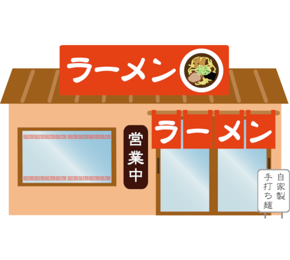

アルバイト
FUJINラーメン 東京駅店 店舗スタッフの募集詳細
アルバイト・パート
【ラーメン屋ホール・キッチンスタッフ】
NEWスタッフ募集開始！履歴書不要ですぐ面接可能です！
| 給与 | 時給1080円〜1350円以上 (22時以降：時給1350円〜) ＋ 交通費支給 | シフト | 週2日以上 1日3時間以上 |
|---|---|---|---|
| 勤務地 | 東京都××区××1丁目2-3 | 最寄駅 | 東京駅 |
☆新人さんがFUJINで働き始めて安心だったポイントご紹介☆
ホールもキッチンもマニュアルがあって安心！
A社員さんの比率が高いので、困った時のサポートが安心！
※ほかにも無料まかない、社割、車バイク通勤など助かるポイントが多めです！
／
FUJINラーメンでスタッフ募集！
お客様やスタッフの声を活かした店舗が自慢です！
＼
「より食べに行やすい」「より働きやすい」
お店を目指し、アンケートなどを用いてお店の運営を決めています！
だからこそ、私たちは新人さんでも話をしやすく、困ったことは相談しやすいお店作りを心掛けています！
もし、「働きやすさ」でお仕事をお探しなら、是非一度ご連絡ください！
- 
注目ポイント
〜FUJINってこんなラーメン屋です〜
FUJINは濃厚でまろやかなとんこつ『FUJINらーめん』が人気のラーメン屋。
他にもオープン当時から作り上げているサイドメニュー1番人気の『餃子』
様々なメニューをご提供させていただいております♪
覚えやすいメニューが多いのでアルバイトの方もスグに覚えてくださいます☆
餃子・らーめんのまかないを使って味から覚えるスタッフも！
アルバイトは10代20代が中心で、パートさんは20代30代が中心。
年齢が近いので、みんな仲良く楽しい店づくりができます。
やはり仕事は楽しくなければいけませんよね。
＜＜こんな方、積極採用中！＞＞
○みんなで良い店を作りたい方
〇ランチタイムのパートさん
〇ラストまで勤務できる方
お仕事情報
【ホール】（簡単な接客・サービスです）
◆オーダーをお伺いしてキッチンへ！
◆ラーメンが完成♪⇒お客様へご提供
◆レジでのお会計
◆終わった食器をお下げします
まずはメニューを覚えることから始めていきましょう♪
【キッチン】（簡単な調理補助です）
◆厨房でのラーメン・餃子などの調理
◆ねぎなどのカンタンな食材カット
◆ごはんや具材の盛り付けetc...
全部にレシピがあるので、飲食店未経験でも大丈夫&安心◎
社員も先輩STAFFも、みんな真剣に相談に乗ってくれる人ばかりなので
不安なことは何でも相談して下さいね☆
◆昇給あり
昇給査定は毎月有り♪1ヶ月で30円UPした方もいらっしゃいます♪
オペレーションスピードが通常より速ければ時給アップ。
後輩バイトの指導が上手にできれば時給アップ。
お客様からの評判が良ければ時給アップ。
スタッフの中のリーダー役が出来れば時給アップ。
などなど。
⇒ 頑張ったら頑張った分だけ評価してもらえるのがFUJIN流☆★
まかない無料は、給料が減らないから物凄くお得?
◆支払い方法：月1回
◆交通費:一部支給
規定内支給※上限1日/1000円まで
シフト自己申告（7日ごとに提出）
夜勤 、 夜のみ
【 22：00〜翌1：15 】
一週間ごとのシフト制
■□ 夜勤で稼ぎたい方大歓迎 □■
只今夜勤スタッフ大募集中！
少ない時間でしっかり稼げる！
夜勤で「おいしく」働きませんか？
シフト提出1週ごとなので、プライベートと両立◎
★昼間勤務やランチタイムも募集中！★
詳しくはホームページ内の別原稿をチェック♪
面接時間にお店に来てくれればOKです♪
当日面接も対応中♪
【こんな方たち大歓迎！】
■アルバイト未経験の方
■学生/フリーター/主婦歓迎/中高年
■飲食店で働いた事のある方
■Wワークをお探しの方
■らーめんが好きな方
■深夜で稼ぎたいとお考えの方
■正社員登用を目指す方
飲食業界経験者の方、 ラーメン屋、居酒屋、焼肉、イタリアン、フレンチ、和食、中華、カフェ等、経験ジャンル不問です！
- 未経験者歓迎
- 経験者優遇
- 高校生不可
- フリーター歓迎
- Wワーク歓迎
- 大学生歓迎
- 二部学生歓迎
- 主婦（夫）歓迎
- 高校卒業以上
- 友達と応募歓迎
- 履歴書不要
- 体を動かす仕事
- すぐ働ける
- 社員登用あり
- 制服貸与
- 研修制度あり
- まかない（食事）あり
- 社員割引あり
- 駅から5分以内
- 交通費支給
- バイク・車通勤OK
- 昇給あり